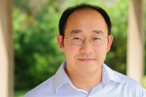
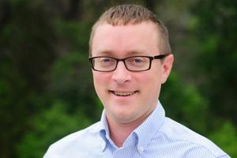

Our Team
Travis Oliphant, Ph.D.
Co-Founder & Chief Executive Officer
Travis has a Ph.D. from the Mayo Clinic and B.S. and M.S. degrees in Mathematics and Electrical Engineering from Brigham Young University. Since 1997, he has worked extensively with Python for numerical and scientific programming, most notably as the primary developer of the NumPy package, and as a founding contributor of the SciPy package. He is also the author of the definitive "Guide to NumPy".
Travis was an assistant professor of Electrical and Computer Engineering at BYU from 2001-2007, where he taught courses in probability theory, electromagnetics, inverse problems, and signal processing. He also served as Director of the Biomedical Imaging Lab, where he researched satellite remote sensing, MRI, ultrasound, elastography, and scanning impedance imaging.
From 2007-2011, Travis was the President at Enthought, Inc. During his tenure there, the company grew from 15 to 50 employees, and Travis worked with Fortune 50 companies such as Shell, J. P. Morgan, and Proctor & Gamble on all aspects of the contractual relationship, including consulting, training, codearchitecture, and development.
As CEO of Continuum Analytics, Travis engages customers, develops business strategy, and guides technical direction of the company. He actively contributes to software development, and engages with the wider open source community in the Python ecosystem.
Peter Wang
Co-Founder & President
Peter holds a B.A. in Physics from Cornell University and has been developing applications professionally using Python since 2001. Before co-founding Continuum Analytics in 2011, Peter spent seven years at Enthought designing and developing applications for a variety of companies, including investment bankers, high-frequency trading firms, oil companies, and others. In 2007, Peter was named Director of Technical Architecture and served as client liaison on high-profile projects. Peter also developed Chaco, an open-source, Python-based toolkit for interactive data visualization.
Peter's roles at Continuum Analytics include product design and development, software management, business strategy, and training.
Jason Soja
Controller
Mr. Soja has an M.B.A. in Finance from the University of Delaware and a B.S. in Finance from Arizona State University. Prior to joining Continuum in 2012, Jason worked at ProFund Advisors, where he was responsible for the daily trading & reporting activities in leveraged Long/Short ProShares Exchange Traded Funds. Jason was also previously employed at E*TRADE Financial as a Treasury Analyst, where he was responsible for managing E*TRADE cash portfolio, and at PFPC INC., a PNC Financial Services company, as an Investment Accountant responsible for accounting for mutual funds.
Francesc Alted
Software Architect
Jay Bourque
Software Engineer
Paddy Mullen
Software Engineer
Hugo Shi, Ph.D.
Software Engineer
Ilan Schnell, Ph.D.
Software Engineer
Bryan Van De Ven
Software Engineer
Mark Wiebe
Software Architect
Mark Florisson
Software Engineer
Bradley Kreider
Director of IT
Douglas Pennock
Director of Business Development
Mr. Pennock received a B.S. in Business Administration from Weber State University and a Masters Degree from the Marriott School of Business at Brigham Young University. Doug has over ten years experience as CFO and senior management of several companies, both public and private. He has had extensive experience with start-up to mid-sized companies in Virginia, South Carolina, New York and Central America; managing operating budgets from $500,000 to $15 million. As a founding member of an international consulting group, Doug also has significant experience in analyzing financial and operational systems, developing sales and marketing strategies, and driving overall business expansion activities. With significant experience in both the technology and for-profit education industries, he brings years of practical business experience to the Continuum team. Doug is currently a member of the Board of Directors of corporations located both in and outside of the United States.
Matt Harward
Director of Sales & Marketing
Matt Harward, Director of Sales and Marketing, received a B.A. from Brigham Young University in Spanish and Business in '94. He has 18 years experience in high tech sales management and marketing. He cofounded and sold two high-tech companies, Professional Presentations Group and Makau Corporation, which focused on software training and product marketing services for leading hardware and software vendors. Before joining Continuum, Matt served as Sales and Marketing Director for Enthought Inc, a scientific computing services firm.